Roost pro
- 840 WhБатарея
- 110 кмзапас хода*
от 289 000 ₽примерная цена
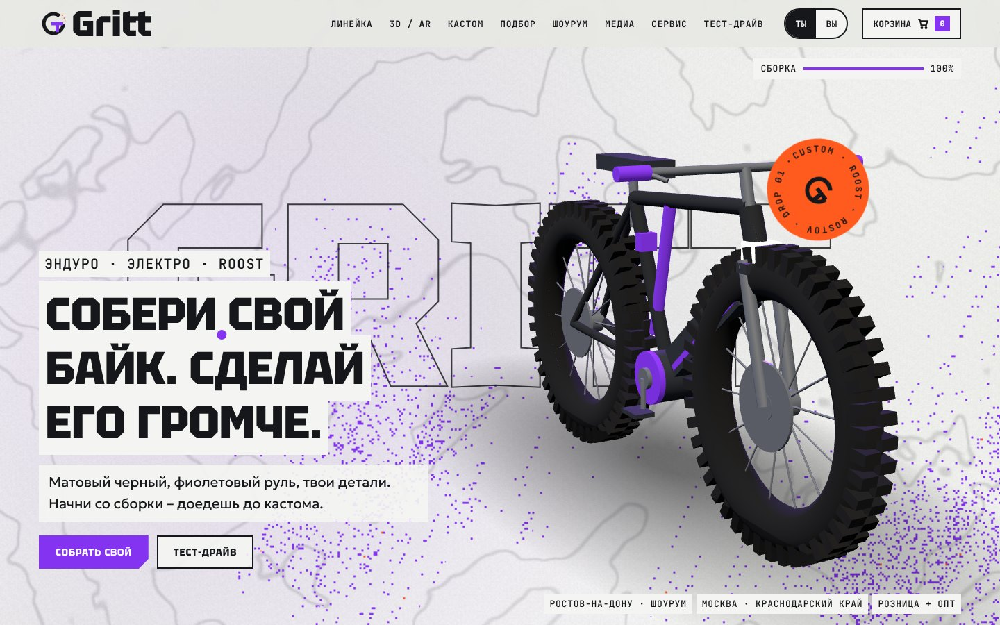
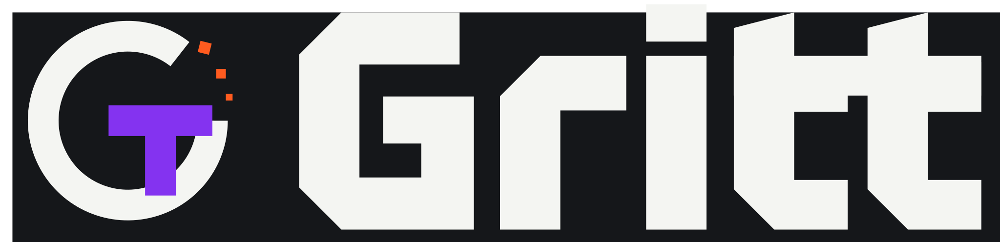
Электробайки, ATV, UTV и снег. Кастом, комьюнити и честный тон для родителей.
Имя звучит как песок на зубах и держит GT внутри. Бренд про технику, которую катают, ломают и кастомят, но говорит честно, чтобы родители ему верили.
Берем у Cowboy чистый каркас и короткие фразы, у Sur Ronster скорость, кастом и UGC.
Матовый черный, фиолетовый руль, твои детали. Начни со сборки – доедешь до кастома.
Простая техника без сюрпризов: понятная гарантия, сервис рядом, обучение на тест-драйве.
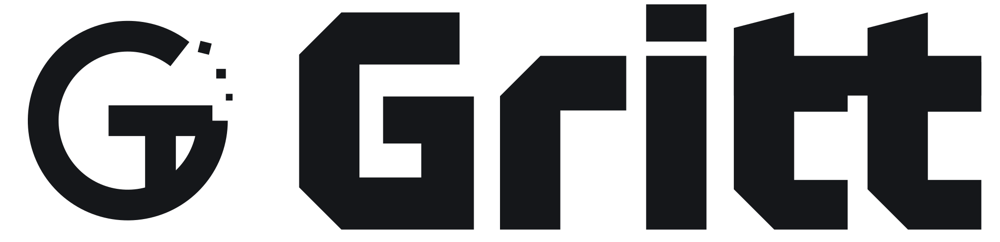
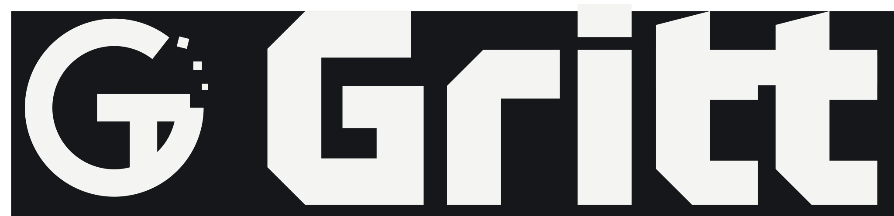
Поле x = высота буквы t. Минимальная ширина логотипа: 120 px на экране, 25 мм в печати. Знак отдельно: от 20 px.
Также нельзя: переставлять знак и слово, заменять шрифт, добавлять слоганы вплотную, использовать оранжевые зерна без фиолетовой стойки T.
Violet на темном для текста только в версии Lift. Spark не для текста, только заливка с Tar.
Реальных фото пока нет: везде плейсхолдеры с подписью кадра.
Диагональный срез 14-42 px на углах кнопок и карточек. Стикеры: круг, оранжевый, текст по кругу. Зерно: пиксели 2 px.
Прямые углы, квадратные концы линий, один срез. Без заливок и градиентов. Размеры: 24, 32, 48 px.
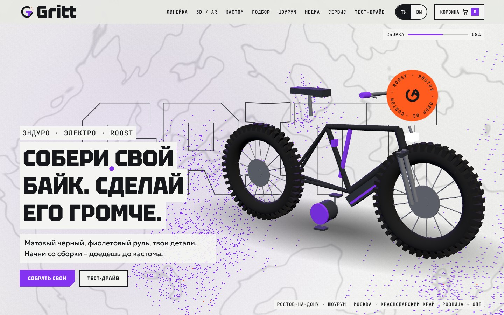
WebGL2, фрагментный: контурные линии рельефа, зерно-dither, фиолетовое облако, следует за курсором. Свой код, без пакета.
ScrollTrigger, SplitText для заголовка, коллаж-раскрытие видео, камера в 3D-туре.
cubic-bezier(.6,0,.2,1). 180 мс отклик, 420 мс переходы, 900 мс сцены.
prefers-reduced-motion: шейдер выключен, сборка показана целиком, анимации 0 мс.
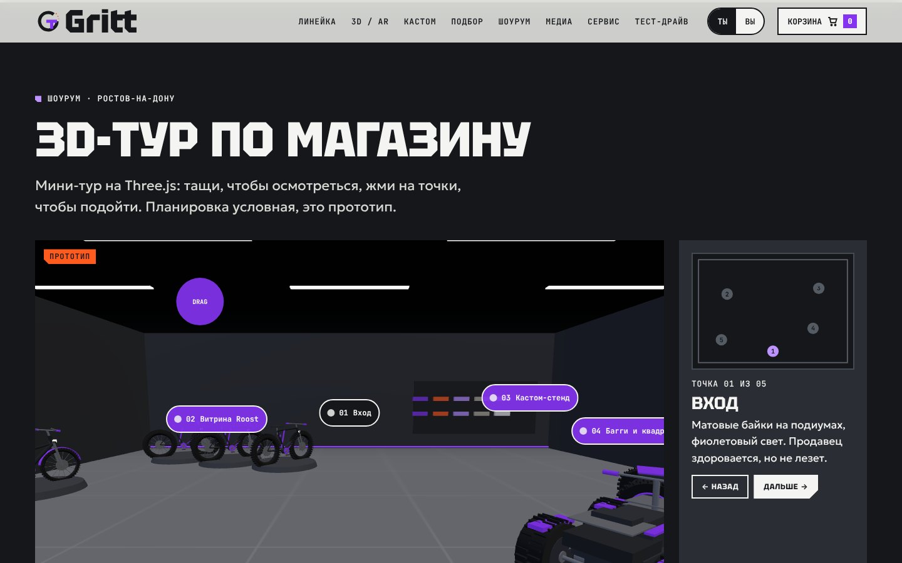
Фасад: фирменная вывеска Fog с срезом, внутри матовые подиумы и фиолетовая линия света. Мини-тур по залу есть на сайте.
Контакты и домен – заглушки.
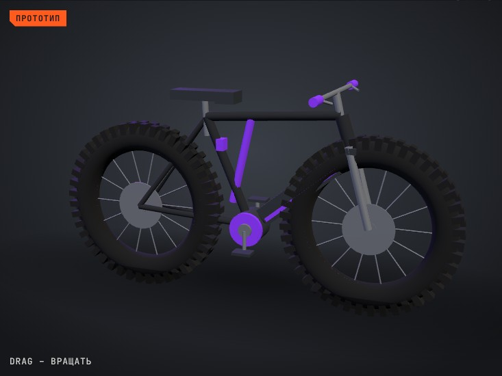
3D-прототип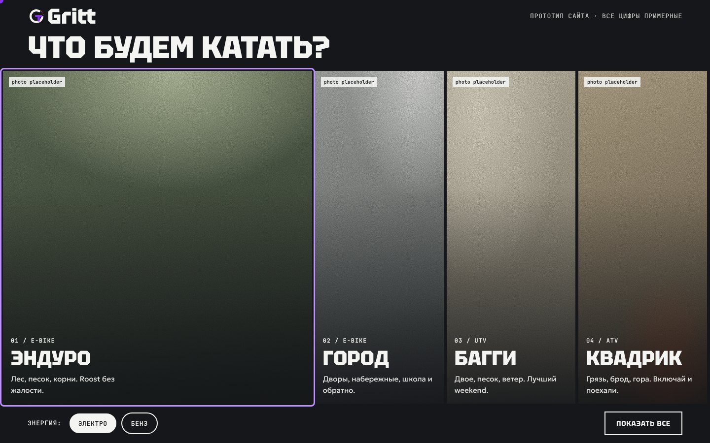
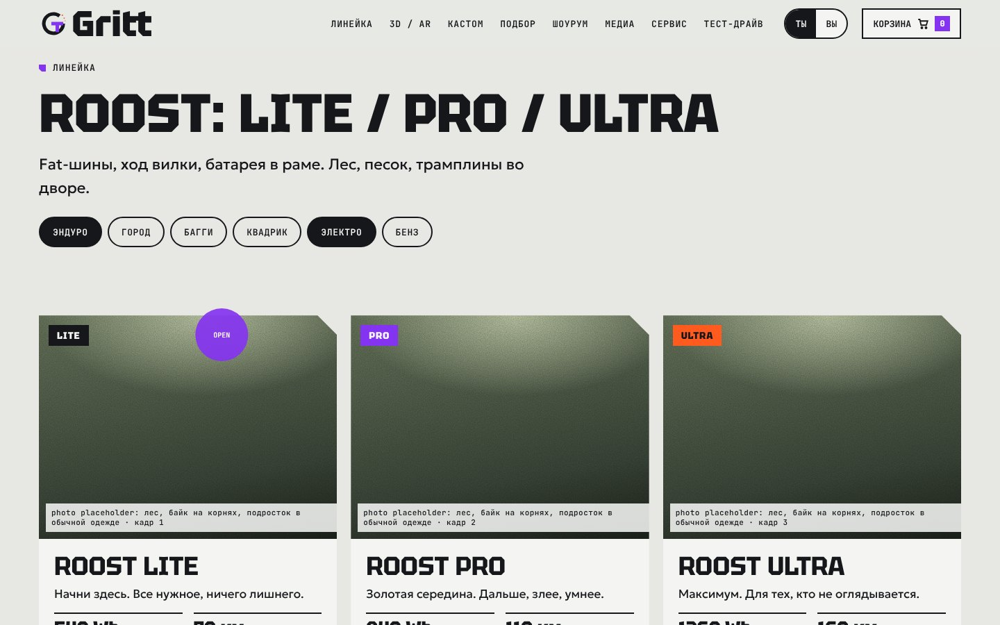
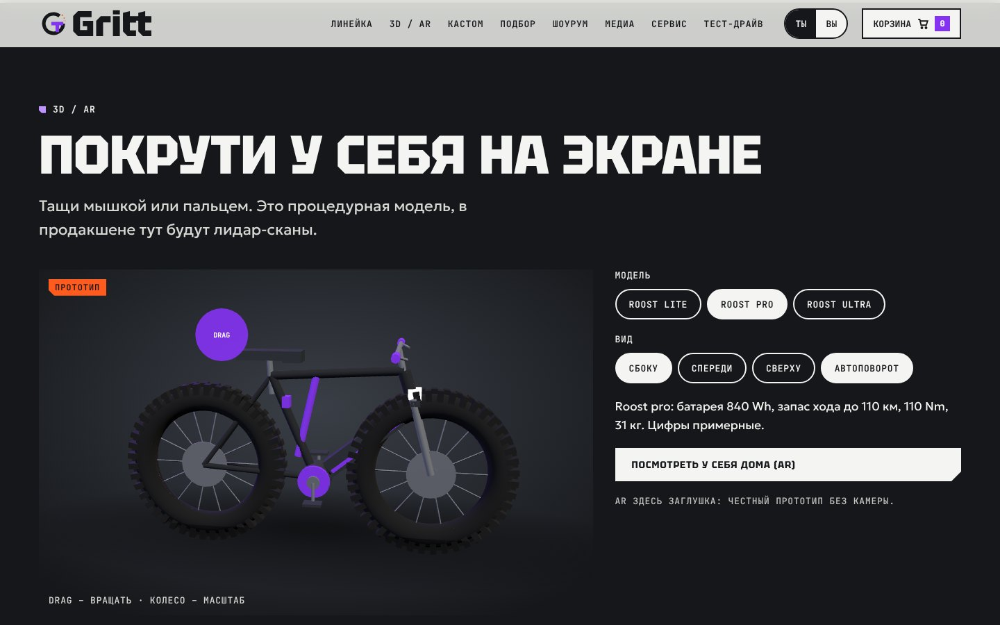
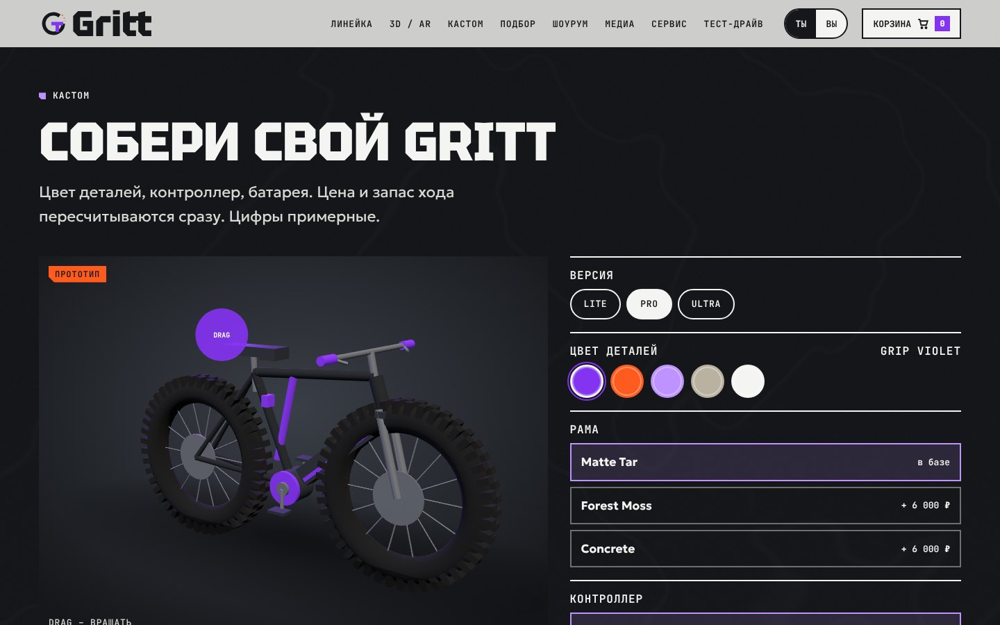
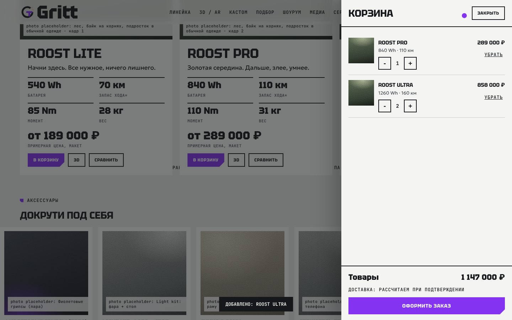